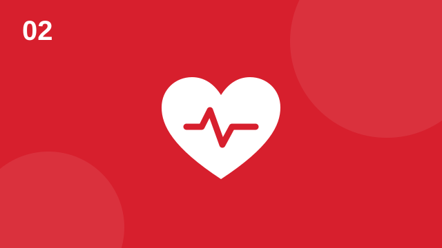
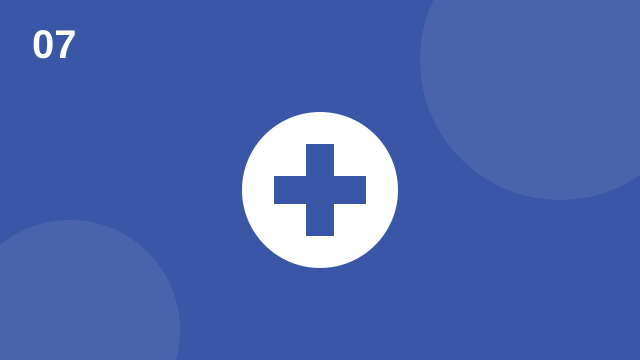

Course 2 · 80 hours · women-centered · survivor-led
Certified Survivor Workforce Facilitator
A course for women with lived experience who want to help other women rebuild: survivors of domestic violence, sexual violence, and trafficking, and women coming home from incarceration or out of homelessness. You'll learn to support women through trauma recovery, safety, stabilization, and the path to work. It prepares you for the nationally recognized NADSP DSP-I Certification, aligned to SOC 21-1093 (Social and Human Service Assistants).
Your 80 hours
Course at a glance
Every class follows the same rhythm: Learn, Practice, Apply. Your lived experience is valued here, and you never have to share your own story to participate. Practice cases are fictional.
Why a women-centered course
Built around women's lives
Safety comes with her
Women leaving abuse or exploitation often face risks at work, on the commute, and online. Safety planning runs through every module.
Caregiving is part of the plan
Child care, custody, school schedules, and caring for parents shape whether a job is possible. Plans start there.
Economic power
Financial abuse leaves many women with no credit, no savings, and gaps in work history. The goal is a job and a path to lasting independence.
The course uses gender-responsive, trauma-informed practice. The skills apply to anyone you support. Every practice case centers a woman's experience.
Your credential
How this course builds your DSP-I
| Code of Ethics Commitment badge | Module 1 (required first) |
|---|---|
| Core competency badges | Person-Centered Practices (Module 3) · Crisis Prevention and Intervention (Module 5) · Safety (Module 6) · Health and Wellness (Module 7) |
| Portfolio work samples | Your mobility plan, de-escalation debriefs, safety plan, and wellness resource sheet are designed to be used as work samples. |
Core content · 45 hours
Modules
The Facilitator Role & NADSP Code of Ethics
Your role, your limits, and the ethics that guide your support of women.

Module 02 · 6 hrsTrauma Recovery & Stabilization
How trauma affects women at work, and how stability is rebuilt.
Person-Centered Practices & Mobility Planning
Plans built around the person's goals, not the program's.
Communication & Group Facilitation
Leading conversations and groups that feel safe.
Crisis Prevention & Behavior Support
Preventing crises, de-escalating, and positive behavior support.
Safety & Safety Planning
Safety at home, at work, on the commute, and online.

Module 07 · 4 hrsHealth & Wellness Support
Supporting women's whole-person health on the path to work.
Documentation & Resource Referral
Accurate notes and referrals that actually connect.
Job search support
Translate lived experience into a résumé, find real openings, avoid scams, and practice interviews.
Open job searchCapstone: Workforce Readiness Workshop
Design and co-facilitate a workforce readiness session for women survivors, then present your results.
Open capstone